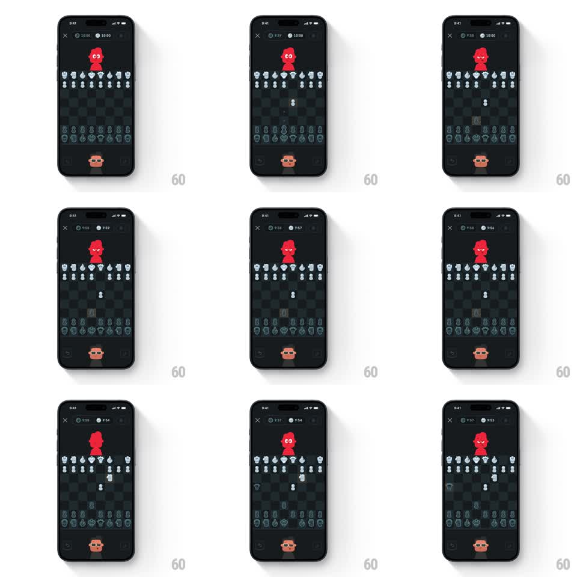

Media
Frame-by-frame

Rebuild this interaction 1:1: Duolingo Chess live play - fluid piece slides and captures on the board while the red opponent mascot and your orange avatar react to every move from the top and bottom rails.

Rebuild this interaction 1:1: Duolingo Chess live play - fluid piece slides and captures on the board while the red opponent mascot and your orange avatar react to every move from the top and bottom rails. ## Integration Integration: stack-agnostic spec - springs given as stiffness/damping, timed motions as duration + curve; map every value to your framework and animation library of choice. ## Scene Duolingo Chess, near-black: a top bar with close X, both clocks (10:00 each), and sound controls; the red opponent mascot sits above the board, your orange avatar below it; the board is a dark green checker with flat white and dark-green pieces. ## Motion spec Pattern: reactive mascots plus fluid piece motion in a chess match. - Piece moves glide: a tapped piece slides along its path (250ms, ease-in-out, arc-less straight lines), landing with a tiny settle (scale 1 -> 0.96 -> 1, 120ms). The destination square flashes a highlight pill before the move commits. - Captures: the taken piece shrinks and fades under the attacker (150ms) as the attacker lands; the captured piece slides into the scorer tray (300ms). - The red mascot reacts per move: eyes dart to the moved piece (150ms), then one of its expressions - confident smirk on its good moves, squeezed-shut worry on its blunders, wide-eye surprise on your captures. Each expression crossfades over 200ms and holds until the next move. - Your orange avatar mirrors smaller reactions: a slight lean and eye shift toward the action (150ms). - Clocks tick per second with a soft digit roll (100ms); the active player's clock glows subtly. - The board itself never moves - no tilts, no zooms. ## Calibration - Mascot expressions are emotional reads of position quality, not random loops - wire them to move evaluation. - Piece motion is fast enough to keep play snappy: never over 300ms for a slide. ## Reduced motion Pieces jump squares with a 150ms fade; mascots swap expressions without eye darts. ## Don't miss - The mascots' eyes track the actual moved piece - that tracking sells the aliveness. - Last-move highlight is a soft square glow, not an outline.